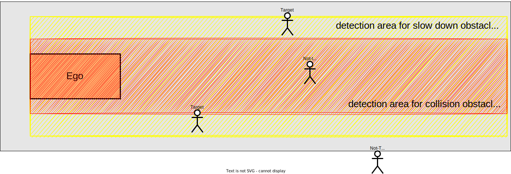

Obstacle Stop Planner#
Overview#
obstacle_stop_planner has following modules
- Obstacle Stop Planner
- inserts a stop point in trajectory when there is a static point cloud on the trajectory.
- Slow Down Planner
- inserts a deceleration section in trajectory when there is a point cloud near the trajectory.
- Adaptive Cruise Controller (ACC)
- embeds target velocity in trajectory when there is a dynamic point cloud on the trajectory.
Input topics#
| Name | Type | Description |
|---|---|---|
~/input/pointcloud |
sensor_msgs::PointCloud2 | obstacle pointcloud |
~/input/trajectory |
autoware_planning_msgs::Trajectory | trajectory |
~/input/vector_map |
autoware_map_msgs::msg::LaneletMapBin | vector map |
~/input/odometry |
nav_msgs::Odometry | vehicle velocity |
~/input/dynamic_objects |
autoware_perception_msgs::PredictedObjects | dynamic objects |
~/input/expand_stop_range |
tier4_planning_msgs::msg::ExpandStopRange | expand stop range |
Output topics#
| Name | Type | Description |
|---|---|---|
~output/trajectory |
autoware_planning_msgs::Trajectory | trajectory to be followed |
Common Parameter#
| Name | Type | Description | Default | Range |
|---|---|---|---|---|
| max_vel | float | max velocity limit [m/s] | 11.1 | N/A |
| normal.min_acc | float | min deceleration [m/ss] | -0.5 | N/A |
| normal.max_acc | float | max acceleration [m/ss] | 1 | N/A |
| normal.min_jerk | float | min jerk [m/sss] | -0.5 | N/A |
| normal.max_jerk | float | max jerk [m/sss] | 1 | N/A |
| limit.min_acc | float | min deceleration limit [m/ss] | -2.5 | N/A |
| limit.max_acc | float | max acceleration [m/ss] | 1 | N/A |
| limit.min_jerk | float | min jerk [m/sss] | -1.5 | N/A |
| limit.max_jerk | float | max jerk [m/sss] | 1.5 | N/A |
| Parameter | Type | Description |
|---|---|---|
enable_slow_down |
bool | enable slow down planner [-] |
max_velocity |
double | max velocity [m/s] |
chattering_threshold |
double | even if the obstacle disappears, the stop judgment continues for chattering_threshold [s] |
enable_z_axis_obstacle_filtering |
bool | filter obstacles in z axis (height) [-] |
z_axis_filtering_buffer |
double | additional buffer for z axis filtering [m] |
use_predicted_objects |
bool | whether to use predicted objects for collision and slowdown detection [-] |
predicted_object_filtering_threshold |
double | threshold for filtering predicted objects [valid only publish_obstacle_polygon true] [m] |
publish_obstacle_polygon |
bool | if use_predicted_objects is true, node publishes collision polygon [-] |
Obstacle Stop Planner#
Role#
This module inserts the stop point before the obstacle with margin. In nominal case, the margin is the sum
of baselink_to_front and max_longitudinal_margin. The baselink_to_front means the distance between baselink(
center of rear-wheel axis) and front of the car. The detection area is generated along the processed trajectory as
following figure. (This module cut off the input trajectory behind the ego position and decimates the trajectory points
for reducing computational costs.)


If another stop point has already been inserted by other modules within max_longitudinal_margin, the margin is the sum
of baselink_to_front and min_longitudinal_margin. This feature exists to avoid stopping unnaturally position. (For
example, the ego stops unnaturally far away from stop line of crosswalk that pedestrians cross to without this feature.)

The module searches the obstacle pointcloud within detection area. When the pointcloud is
found, Adaptive Cruise Controller modules starts to work. only when Adaptive Cruise Controller modules does not
insert target velocity, the stop point is inserted to the trajectory. The stop point means the point with 0 velocity.
Restart prevention#
If it needs X meters (e.g. 0.5 meters) to stop once the vehicle starts moving due to the poor vehicle control performance, the vehicle goes over the stopping position that should be strictly observed when the vehicle starts to moving in order to approach the near stop point (e.g. 0.3 meters away).
This module has parameter hold_stop_margin_distance in order to prevent from these redundant restart. If the vehicle
is stopped within hold_stop_margin_distance meters from stop point of the module, the module judges that the vehicle
has already stopped for the module's stop point and plans to keep stopping current position even if the vehicle is
stopped due to other factors.


Parameters#
| Name | Type | Description | Default | Range |
|---|---|---|---|---|
| chattering_threshold | float | even if the obstacle disappears, the stop judgment continues for chattering_threshold [s] | 0.5 | N/A |
| lowpass_gain | float | gain parameter for low pass filter [-] | 0.9 | N/A |
| max_velocity | float | max velocity [m/s] | 20.0 | N/A |
| enable_slow_down | boolean | whether to use slow down planner [-] | false | N/A |
| enable_z_axis_obstacle_filtering | boolean | filter obstacles in z axis (height) [-] | true | N/A |
| z_axis_filtering_buffer | float | additional buffer for z axis filtering [m] | 0.0 | N/A |
| voxel_grid_x | float | voxel grid x parameter for filtering pointcloud [m] | 0.05 | N/A |
| voxel_grid_y | float | voxel grid y parameter for filtering pointcloud [m] | 0.05 | N/A |
| voxel_grid_z | float | voxel grid z parameter for filtering pointcloud [m] | 100000.0 | N/A |
| use_predicted_objects | boolean | whether to use predicted objects [-] | false | N/A |
| publish_obstacle_polygon | boolean | whether to publish obstacle polygon [-] | false | N/A |
| predicted_object_filtering_threshold | float | threshold for filtering predicted objects (valid only publish_obstacle_polygon true) [m] | 1.5 | N/A |
| stop_position.max_longitudinal_margin | float | stop margin distance from obstacle on the path [m] | 5.0 | N/A |
| stop_position.max_longitudinal_margin_behind_goal | float | stop margin distance from obstacle behind the goal on the path [m] | 3.0 | N/A |
| stop_position.min_longitudinal_margin | float | stop margin distance when any other stop point is inserted in stop margin [m] | 2.0 | N/A |
| stop_position.hold_stop_margin_distance | float | the ego keeps stopping if the ego is in this margin [m] | 0.0 | N/A |
| detection_area.lateral_margin | float | margin [m] | 0.0 | N/A |
| detection_area.vehicle_lateral_margin | float | margin of vehicle footprint [m] | 0.0 | N/A |
| detection_area.pedestrian_lateral_margin | float | margin of pedestrian footprint [m] | 0.0 | N/A |
| detection_area.unknown_lateral_margin | float | margin of unknown footprint [m] | 0.0 | N/A |
| detection_area.step_length | float | step length for pointcloud search range [m] | 1.0 | N/A |
| detection_area.enable_stop_behind_goal_for_obstacle | boolean | enable extend trajectory after goal lane for obstacle detection | true | N/A |
| slow_down_section.longitudinal_forward_margin | float | margin distance from slow down point to vehicle front [m] | 5.0 | N/A |
| slow_down_section.longitudinal_backward_margin | float | margin distance from slow down point to vehicle rear [m] | 5.0 | N/A |
| slow_down_section.longitudinal_margin_span | float | fineness param for relaxing slow down margin (use this param if consider_constraints is True) [m/s] | -0.1 | N/A |
| slow_down_section.min_longitudinal_forward_margin | float | min margin for relaxing slow down margin (use this param if consider_constraints is True) [m/s] | 1.0 | N/A |
| detection_area.lateral_margin | float | offset from vehicle side edge for expanding the search area of the surrounding point cloud [m] | 1.0 | N/A |
| detection_area.vehicle_lateral_margin | float | offset from vehicle side edge for expanding the search area of the surrounding point cloud [m] | 1.0 | N/A |
| detection_area.pedestrian_lateral_margin | float | offset from pedestrian side edge for expanding the search area of the surrounding point cloud [m] | 1.0 | N/A |
| detection_area.unknown_lateral_margin | float | offset from unknown side edge for expanding the search area of the surrounding point cloud [m] | 1.0 | N/A |
| target_velocity.max_slow_down_velocity | float | max slow down velocity (use this param if consider_constraints is False)[m/s] | 1.38 | N/A |
| target_velocity.min_slow_down_velocity | float | offset from vehicle side edge for expanding the search area of the surrounding point cloud [m] | 0.28 | N/A |
| target_velocity.slow_down_velocity | float | target slow down velocity (use this param if consider_constraints is True)[m/s] | 1.38 | N/A |
| constraints.jerk_min_slow_down | float | min slow down jerk constraint [m/sss] | -0.3 | N/A |
| constraints.jerk_span | float | fineness param for planning deceleration jerk [m/sss] | -0.01 | N/A |
| constraints.jerk_start | float | init jerk used for deceleration planning [m/sss] | -0.1 | N/A |
| slow_down_planner.consider_constraints | boolean | set 'True', if no decel plan found under jerk/dec constrains, relax target slow down vel [-] | false | N/A |
| slow_down_planner.velocity_threshold_decel_complete | float | use for judge whether the ego velocity converges the target slow down velocity [m/s] | 0.2 | N/A |
| slow_down_planner.acceleration_threshold_decel_complete | float | use for judge whether the ego velocity converges the target slow down velocity [m/ss] | 0.1 | N/A |
Stop position#
| Parameter | Type | Description |
|---|---|---|
max_longitudinal_margin |
double | margin between obstacle and the ego's front [m] |
max_longitudinal_margin_behind_goal |
double | margin between obstacle and the ego's front when the stop point is behind the goal[m] |
min_longitudinal_margin |
double | if any obstacle exists within max_longitudinal_margin, this module set margin as the value of stop margin to min_longitudinal_margin [m] |
hold_stop_margin_distance |
double | parameter for restart prevention (See above section) [m] |
Obstacle detection area#
| Parameter | Type | Description |
|---|---|---|
lateral_margin |
double | lateral margin from the vehicle footprint for collision obstacle detection area [m] |
step_length |
double | step length for pointcloud search range [m] |
enable_stop_behind_goal_for_obstacle |
bool | enabling extend trajectory after goal lane for obstacle detection |
Flowchart#
![uml diagram]()
Slow Down Planner#
Role#
This module inserts the slow down section before the obstacle with forward margin and backward margin. The forward
margin is the sum of baselink_to_front and longitudinal_forward_margin, and the backward margin is the sum
of baselink_to_front and longitudinal_backward_margin. The ego keeps slow down velocity in slow down section. The
velocity is calculated the following equation.
\(v_{target} = v_{min} + \frac{l_{ld} - l_{vw}/2}{l_{margin}} (v_{max} - v_{min} )\)
- \(v_{target}\) : slow down target velocity [m/s]
- \(v_{min}\) :
min_slow_down_velocity[m/s] - \(v_{max}\) :
max_slow_down_velocity[m/s] - \(l_{ld}\) : lateral deviation between the obstacle and the ego footprint [m]
- \(l_{margin}\) :
lateral_margin[m] - \(l_{vw}\) : width of the ego footprint [m]
The above equation means that the smaller the lateral deviation of the pointcloud, the lower the velocity of the slow down section.


Parameters#
| Name | Type | Description | Default | Range |
|---|---|---|---|---|
| adaptive_cruise_control.use_object_to_estimate_vel | boolean | use tracking objects for estimating object velocity or not | true | N/A |
| adaptive_cruise_control.use_pcl_to_estimate_vel | boolean | use pcl for estimating object velocity or not | true | N/A |
| adaptive_cruise_control.consider_obj_velocity | boolean | consider forward vehicle velocity to ACC or not | true | N/A |
| adaptive_cruise_control.obstacle_velocity_thresh_to_start_acc | float | start adaptive cruise control when the velocity of the forward obstacle exceeds this value [m/s] | 1.5 | N/A |
| adaptive_cruise_control.obstacle_velocity_thresh_to_stop_acc | float | stop adaptive cruise control when the velocity of the forward obstacle falls below this value [m/s] | 1.0 | N/A |
| adaptive_cruise_control.emergency_stop_acceleration | float | supposed minimum acceleration (deceleration) in emergency stop [m/ss] | -5.0 | N/A |
| adaptive_cruise_control.emergency_stop_idling_time | float | supposed idling time to start emergency stop [s] | 0.5 | N/A |
| adaptive_cruise_control.min_dist_stop | float | minimum distance of emergency stop [m] | 4.0 | N/A |
| adaptive_cruise_control.obstacle_emergency_stop_acceleration | float | supposed minimum acceleration (deceleration) in emergency stop [m/ss] | -5.0 | N/A |
| adaptive_cruise_control.max_standard_acceleration | float | supposed maximum acceleration in active cruise control [m/ss] | 0.5 | N/A |
| adaptive_cruise_control.min_standard_acceleration | float | supposed minimum acceleration (deceleration) in active cruise control | -1.0 | N/A |
| adaptive_cruise_control.standard_idling_time | float | supposed idling time to react object in active cruise control [s] | 0.5 | N/A |
| adaptive_cruise_control.min_dist_standard | float | minimum distance in active cruise control [m] | 4.0 | N/A |
| adaptive_cruise_control.obstacle_min_standard_acceleration | float | supposed minimum acceleration of forward obstacle [m/ss] | -1.5 | N/A |
| adaptive_cruise_control.margin_rate_to_change_vel | float | margin to insert upper velocity [-] | 0.3 | N/A |
| adaptive_cruise_control.use_time_compensation_to_calc_distance | boolean | use time-compensation to calculate distance to forward vehicle | true | N/A |
| adaptive_cruise_control.p_coefficient_positive | float | coefficient P in PID control (used when target dist -current_dist >=0) [-] | 0.1 | N/A |
| adaptive_cruise_control.p_coefficient_negative | float | coefficient P in PID control (used when target dist -current_dist <0) [-] | 0.3 | N/A |
| adaptive_cruise_control.d_coefficient_positive | float | coefficient D in PID control (used when delta_dist >=0) [-] | 0.0 | N/A |
| adaptive_cruise_control.d_coefficient_negative | float | coefficient D in PID control (used when delta_dist <0) [-] | 0.2 | N/A |
| adaptive_cruise_control.object_polygon_length_margin | float | The distance to extend the polygon length the object in pointcloud-object matching [m] | 2.0 | N/A |
| adaptive_cruise_control.object_polygon_width_margin | float | The distance to extend the polygon width the object in pointcloud-object matching [m] | 0.5 | N/A |
| adaptive_cruise_control.valid_estimated_vel_diff_time | float | Maximum time difference treated as continuous points in speed estimation using a point cloud [s] | 1.0 | N/A |
| adaptive_cruise_control.valid_vel_que_time | float | Time width of information used for speed estimation in speed estimation using a point cloud [s] | 0.5 | N/A |
| adaptive_cruise_control.valid_estimated_vel_max | float | Maximum value of valid speed estimation results in speed estimation using a point cloud [m/s] | 20.0 | N/A |
| adaptive_cruise_control.valid_estimated_vel_min | float | Minimum value of valid speed estimation results in speed estimation using a point cloud [m/s] | -20.0 | N/A |
| adaptive_cruise_control.thresh_vel_to_stop | float | Embed a stop line if the maximum speed calculated by ACC is lower than this speed [m/s] | 1.5 | N/A |
| adaptive_cruise_control.lowpass_gain_of_upper_velocity | float | Lowpass-gain of upper velocity | 0.75 | N/A |
| adaptive_cruise_control.use_rough_velocity_estimation | boolean | Use rough estimated velocity if the velocity estimation is failed (#### If this parameter is true, the vehicle may collide with the front car. Be careful. ####) | false | N/A |
| adaptive_cruise_control.rough_velocity_rate | float | In the rough velocity estimation, the velocity of front car is estimated as self current velocity * this value | 0.9 | N/A |
Slow down section#
| Parameter | Type | Description |
|---|---|---|
longitudinal_forward_margin |
double | margin between obstacle and the ego's front [m] |
longitudinal_backward_margin |
double | margin between obstacle and the ego's rear [m] |
Obstacle detection area#
| Parameter | Type | Description |
|---|---|---|
lateral_margin |
double | lateral margin from the vehicle footprint for slow down obstacle detection area [m] |
Slow down target velocity#
| Parameter | Type | Description |
|---|---|---|
max_slow_down_velocity |
double | max slow down velocity [m/s] |
min_slow_down_velocity |
double | min slow down velocity [m/s] |
Flowchart#
![uml diagram]()
Adaptive Cruise Controller#
Role#
Adaptive Cruise Controller module embeds maximum velocity in trajectory when there is a dynamic point cloud on the
trajectory. The value of maximum velocity depends on the own velocity, the velocity of the point cloud ( = velocity of
the front car), and the distance to the point cloud (= distance to the front car).
| Parameter | Type | Description |
|---|---|---|
adaptive_cruise_control.use_object_to_estimate_vel |
bool | use dynamic objects for estimating object velocity or not (valid only if osp.use_predicted_objects false) |
adaptive_cruise_control.use_pcl_to_estimate_vel |
bool | use raw pointclouds for estimating object velocity or not (valid only if osp.use_predicted_objects false) |
adaptive_cruise_control.consider_obj_velocity |
bool | consider forward vehicle velocity to calculate target velocity in adaptive cruise or not |
adaptive_cruise_control.obstacle_velocity_thresh_to_start_acc |
double | start adaptive cruise control when the velocity of the forward obstacle exceeds this value [m/s] |
adaptive_cruise_control.obstacle_velocity_thresh_to_stop_acc |
double | stop acc when the velocity of the forward obstacle falls below this value [m/s] |
adaptive_cruise_control.emergency_stop_acceleration |
double | supposed minimum acceleration (deceleration) in emergency stop [m/ss] |
adaptive_cruise_control.emergency_stop_idling_time |
double | supposed idling time to start emergency stop [s] |
adaptive_cruise_control.min_dist_stop |
double | minimum distance of emergency stop [m] |
adaptive_cruise_control.obstacle_emergency_stop_acceleration |
double | supposed minimum acceleration (deceleration) in emergency stop [m/ss] |
adaptive_cruise_control.max_standard_acceleration |
double | supposed maximum acceleration in active cruise control [m/ss] |
adaptive_cruise_control.min_standard_acceleration |
double | supposed minimum acceleration (deceleration) in active cruise control [m/ss] |
adaptive_cruise_control.standard_idling_time |
double | supposed idling time to react object in active cruise control [s] |
adaptive_cruise_control.min_dist_standard |
double | minimum distance in active cruise control [m] |
adaptive_cruise_control.obstacle_min_standard_acceleration |
double | supposed minimum acceleration of forward obstacle [m/ss] |
adaptive_cruise_control.margin_rate_to_change_vel |
double | rate of margin distance to insert target velocity [-] |
adaptive_cruise_control.use_time_compensation_to_calc_distance |
bool | use time-compensation to calculate distance to forward vehicle |
adaptive_cruise_control.p_coefficient_positive |
double | coefficient P in PID control (used when target dist -current_dist >=0) [-] |
adaptive_cruise_control.p_coefficient_negative |
double | coefficient P in PID control (used when target dist -current_dist <0) [-] |
adaptive_cruise_control.d_coefficient_positive |
double | coefficient D in PID control (used when delta_dist >=0) [-] |
adaptive_cruise_control.d_coefficient_negative |
double | coefficient D in PID control (used when delta_dist <0) [-] |
adaptive_cruise_control.object_polygon_length_margin |
double | The distance to extend the polygon length the object in pointcloud-object matching [m] |
adaptive_cruise_control.object_polygon_width_margin |
double | The distance to extend the polygon width the object in pointcloud-object matching [m] |
adaptive_cruise_control.valid_estimated_vel_diff_time |
double | Maximum time difference treated as continuous points in speed estimation using a point cloud [s] |
adaptive_cruise_control.valid_vel_que_time |
double | Time width of information used for speed estimation in speed estimation using a point cloud [s] |
adaptive_cruise_control.valid_estimated_vel_max |
double | Maximum value of valid speed estimation results in speed estimation using a point cloud [m/s] |
adaptive_cruise_control.valid_estimated_vel_min |
double | Minimum value of valid speed estimation results in speed estimation using a point cloud [m/s] |
adaptive_cruise_control.thresh_vel_to_stop |
double | Embed a stop line if the maximum speed calculated by ACC is lower than this speed [m/s] |
adaptive_cruise_control.lowpass_gain_of_upper_velocity |
double | Lowpass-gain of target velocity |
adaptive_cruise_control.use_rough_velocity_estimation: |
bool | Use rough estimated velocity if the velocity estimation is failed (valid only if osp.use_predicted_objects false) |
adaptive_cruise_control.rough_velocity_rate |
double | In the rough velocity estimation, the velocity of front car is estimated as self current velocity * this value |
Flowchart#
![uml diagram]()
(*1) The target vehicle point is calculated as a closest obstacle PointCloud from ego along the trajectory.
(*2) The sources of velocity estimation can be changed by the following ROS parameters.
adaptive_cruise_control.use_object_to_estimate_veladaptive_cruise_control.use_pcl_to_estimate_vel
This module works only when the target point is found in the detection area of the Obstacle stop planner module.
The first process of this module is to estimate the velocity of the target vehicle point. The velocity estimation uses
the velocity information of dynamic objects or the travel distance of the target vehicle point from the previous step.
The dynamic object information is primal, and the travel distance estimation is used as a backup in case of the
perception failure.
If the target vehicle point is contained in the bounding box of a dynamic object geometrically, the velocity of the
dynamic object is used as the target point velocity.
Otherwise, the target point velocity is calculated by the travel distance of the target point from the previous step;
that is (current_position - previous_position) / dt. Note that this travel distance based estimation fails when the
target point is detected in the first time (it mainly happens in the cut-in situation). To improve the stability of the
estimation, the median of the calculation result for several steps is used.
If the calculated velocity is within the threshold range, it is used as the target point velocity.
Only when the estimation is succeeded and the estimated velocity exceeds the value of obstacle_stop_velocity_thresh_*,
the distance to the pointcloud from self-position is calculated. For prevent chattering in the mode
transition, obstacle_velocity_thresh_to_start_acc is used for the threshold to start adaptive cruise,
and obstacle_velocity_thresh_to_stop_acc is used for the threshold to stop adaptive cruise. When the calculated
distance value exceeds the emergency distance \(d\_{emergency}\) calculated by emergency_stop parameters, target velocity
to insert is calculated.
The emergency distance \(d\_{emergency}\) is calculated as follows.
\(d_{emergency} = d_{margin_{emergency}} + t_{idling_{emergency}} \cdot v_{ego} + (-\frac{v_{ego}^2}{2 \cdot a_{ego_ {emergency}}}) - (-\frac{v_{obj}^2}{2 \cdot a_{obj_{emergency}}})\)
- \(d_{margin_{emergency}}\) is a minimum margin to the obstacle pointcloud. The value of \(d_{margin_{emergency}}\) depends
on the parameter
min_dist_stop - \(t_{idling_{emergency}}\) is a supposed idling time. The value of \(t_{idling_{emergency}}\) depends on the
parameter
emergency_stop_idling_time - \(v_{ego}\) is a current velocity of own vehicle
- \(a_{ego_{_{emergency}}}\) is a minimum acceleration (maximum deceleration) of own vehicle. The value of \(a_{ego_{_
{emergency}}}\) depends on the parameter
emergency_stop_acceleration - \(v_{obj}\) is a current velocity of obstacle pointcloud.
- \(a_{obj_{_{emergency}}}\) is a supposed minimum acceleration of obstacle pointcloud. The value of \(a_{obj_{_
{emergency}}}\) depends on the parameter
obstacle_emergency_stop_acceleration - *Above \(X_{_{emergency}}\) parameters are used only in emergency situation.
The target velocity is determined to keep the distance to the obstacle pointcloud from own vehicle at the standard distance \(d\_{standard}\) calculated as following. Therefore, if the distance to the obstacle pointcloud is longer than standard distance, The target velocity becomes higher than the current velocity, and vice versa. For keeping the distance, a PID controller is used.
\(d_{standard} = d_{margin_{standard}} + t_{idling_{standard}} \cdot v_{ego} + (-\frac{v_{ego}^2}{2 \cdot a_{ego_ {standard}}}) - (-\frac{v_{obj}^2}{2 \cdot a_{obj_{standard}}})\)
- \(d_{margin_{standard}}\) is a minimum margin to the obstacle pointcloud. The value of \(d_{margin_{standard}}\) depends
on the parameter
min_dist_stop - \(t_{idling_{standard}}\) is a supposed idling time. The value of \(t_{idling_{standard}}\) depends on the
parameter
standard_stop_idling_time - \(v_{ego}\) is a current velocity of own vehicle
- \(a_{ego_{_{standard}}}\) is a minimum acceleration (maximum deceleration) of own vehicle. The value of \(a_{ego_{_
{standard}}}\) depends on the parameter
min_standard_acceleration - \(v_{obj}\) is a current velocity of obstacle pointcloud.
- \(a_{obj_{_{standard}}}\) is a supposed minimum acceleration of obstacle pointcloud. The value of \(a_{obj_{_
{standard}}}\) depends on the parameter
obstacle_min_standard_acceleration - *Above \(X_{_{standard}}\) parameters are used only in non-emergency situation.
If the target velocity exceeds the value of thresh_vel_to_stop, the target velocity is embedded in the trajectory.
Known Limits#
- It is strongly depends on velocity planning module whether or not it moves according to the target speed embedded
by
Adaptive Cruise Controllermodule. If the velocity planning module is updated, please take care of the vehicle's behavior as much as possible and always be ready for overriding.
- The velocity estimation algorithm in
Adaptive Cruise Controlleris depend on object tracking module. Please note that if the object-tracking fails or the tracking result is incorrect, it the possibility that the vehicle behaves dangerously.
- It does not work for backward driving, but publishes the path of the input as it is. Please use obstacle_cruise_planner if you want to stop against an obstacle when backward driving.